Problem / 01
Labor-intensive maintenance
One early orchard conversation surfaced a reported $670,000 annual manual weed-removal burden—large enough to justify testing automation immediately.
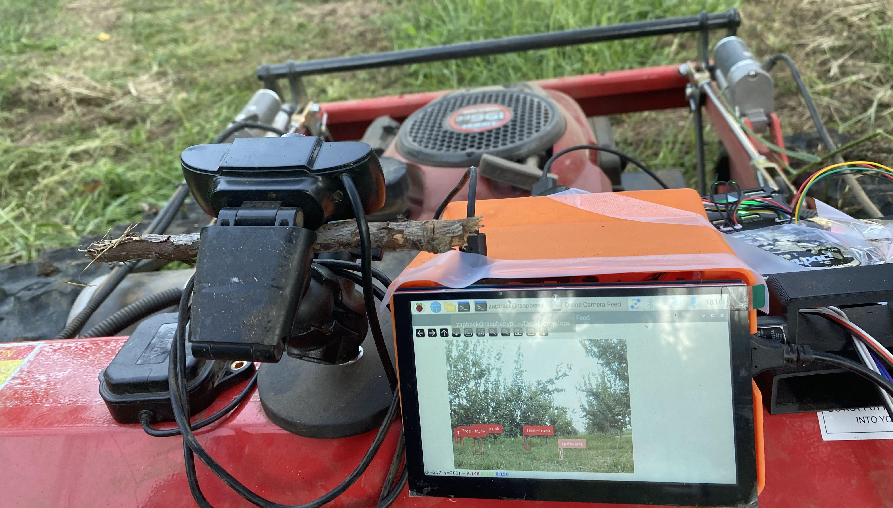
Building an orchard robot from the farm outward—one cheap, testable machine at a time.
For organic growers, a single non-organic herbicide application can jeopardize certification, while approved alternatives can be dramatically more expensive. Manual removal works, but it does not scale cleanly with acreage. ZAPTrack began as a search for the smallest machine that could prove a better workflow in the field.
One early orchard conversation surfaced a reported $670,000 annual manual weed-removal burden—large enough to justify testing automation immediately.
Cultivators and finger weeders can be slow, operator-dependent, and risky around valuable plants. Precision mattered as much as raw coverage.
The project moved toward familiar mowing hardware plus an autonomy layer—reducing new mechanical invention and concentrating effort on perception, control, and deployment.
The archive documents conversations with conventional, drone-enabled, and organic farms in Cincinnati and California. Each pushed the product in a different direction: crop analytics, equipment augmentation, and autonomous physical work.
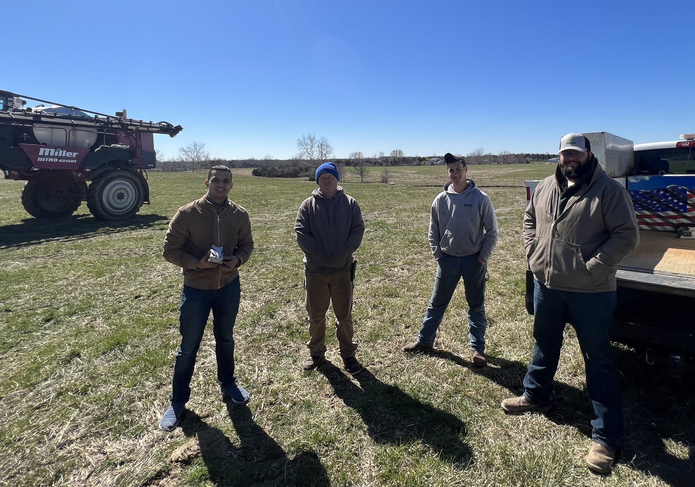
A 1,000+ acre operation highlighted fertilizer spend and the value of repeated stand-count data for smarter allocation.
A grower already using a drone wanted better intelligence from equipment she owned—not another disconnected machine.
An organic farmer working one acre of a 100-acre property needed weed control that could grow without eroding the farming method.
The process borrowed from the same rapid-prototyping discipline used across my hardware work. Keep fidelity only where the question demands it; spend money on learning; let the ugly prototype expose the next constraint.
Turn a field observation into one falsifiable proposition.
Model only the geometry needed to answer the next question.
Print, wire, adapt, or salvage the fastest physical route.
Put the machine into dust, grass, heat, and real operator workflows.
Let evidence—not attachment—choose what survives.
ZAPTrack was not a single robot reveal. It was a sequence of increasingly specific machines, each built to retire a different product or engineering risk.
Build. iSight paired a custom drone with a Raspberry Pi 4 and Pixhawk flight controller for invasive-species detection and stand-count reporting. CropEagle explored a lower-cost, high-resolution camera attachment. CropMantis translated the research into an autonomous ground-robot direction.
Why it mattered. These concepts separated three jobs—observe, understand, act—and clarified that the most acute organic-farm need was not another report. It was removing weeds without chemicals.
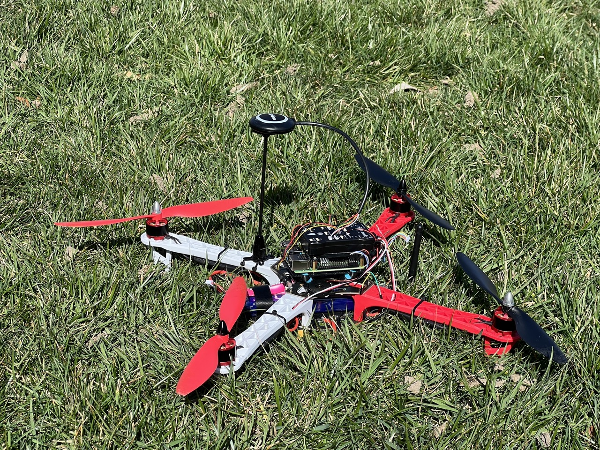
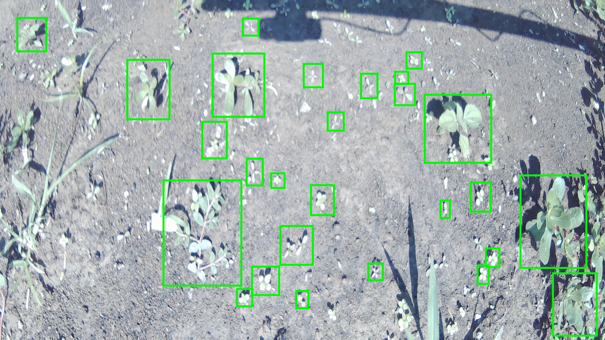
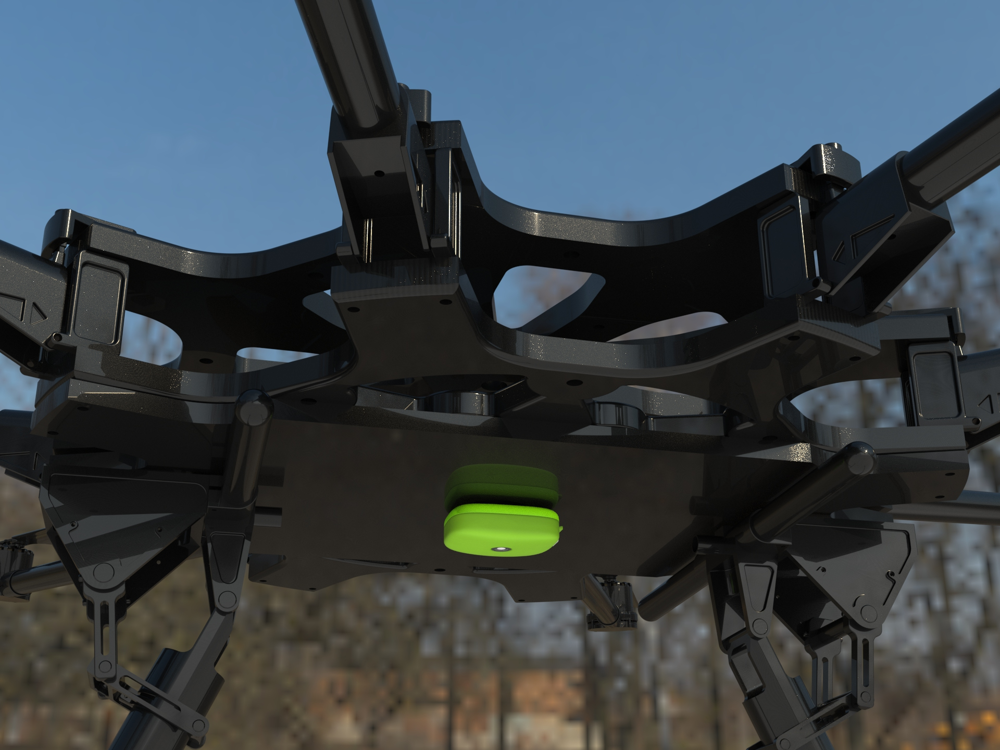
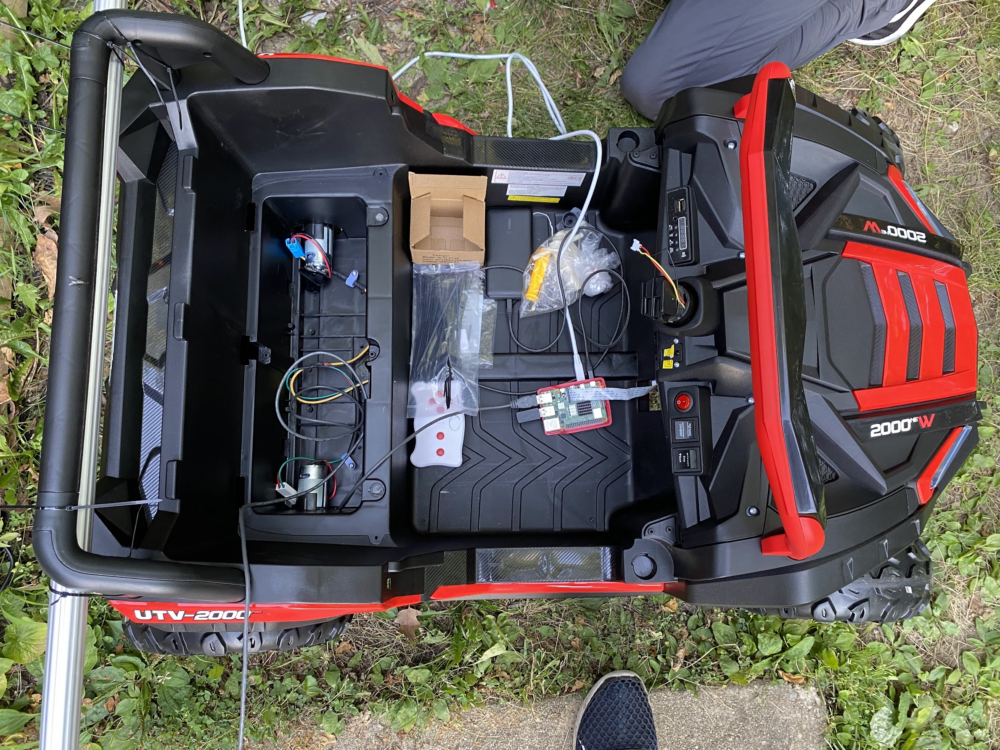
Build. A linear positioning mechanism drew from CNC machines and 3D printers: extrusion rails provided structure, linear rods constrained movement, a lead screw converted motor rotation into controlled travel, and a printed carriage localized the working tool.
Challenge. Targeted removal demands repeatable positioning without prematurely engineering a full vehicle. Isolating the toolhead let the team learn about motion and packaging before coupling it to autonomy.
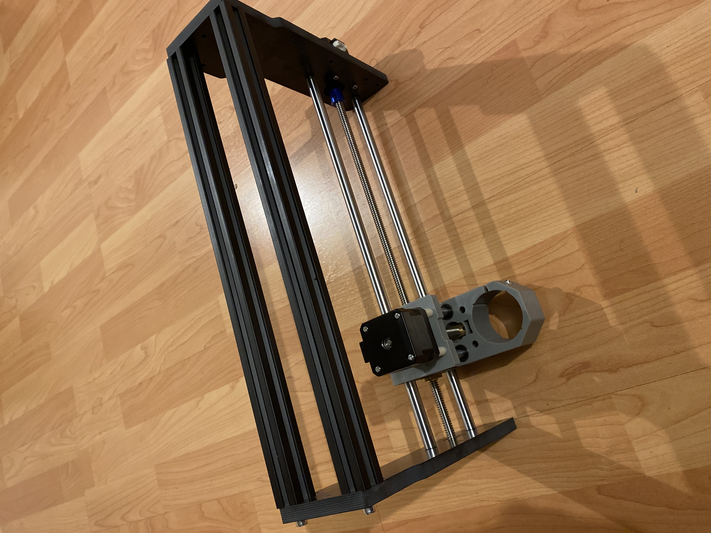
Build. A used electric lawn mower was electrically and mechanically combined with parts from an RC ride-on car. The donor systems supplied a cutting deck, traction, wheels, power, and steering behavior quickly enough to test the premise on a farm.
Challenge overcome. The machine moved and cut, but its geometry was wrong: the deck sat too high. That failure was useful. For roughly $50, it converted an abstract clearance concern into a hard packaging requirement.
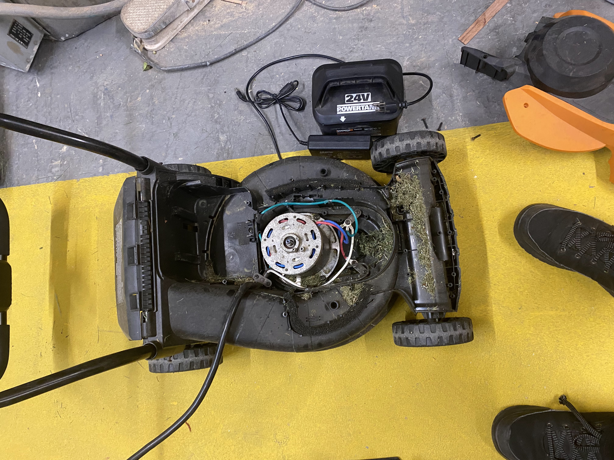
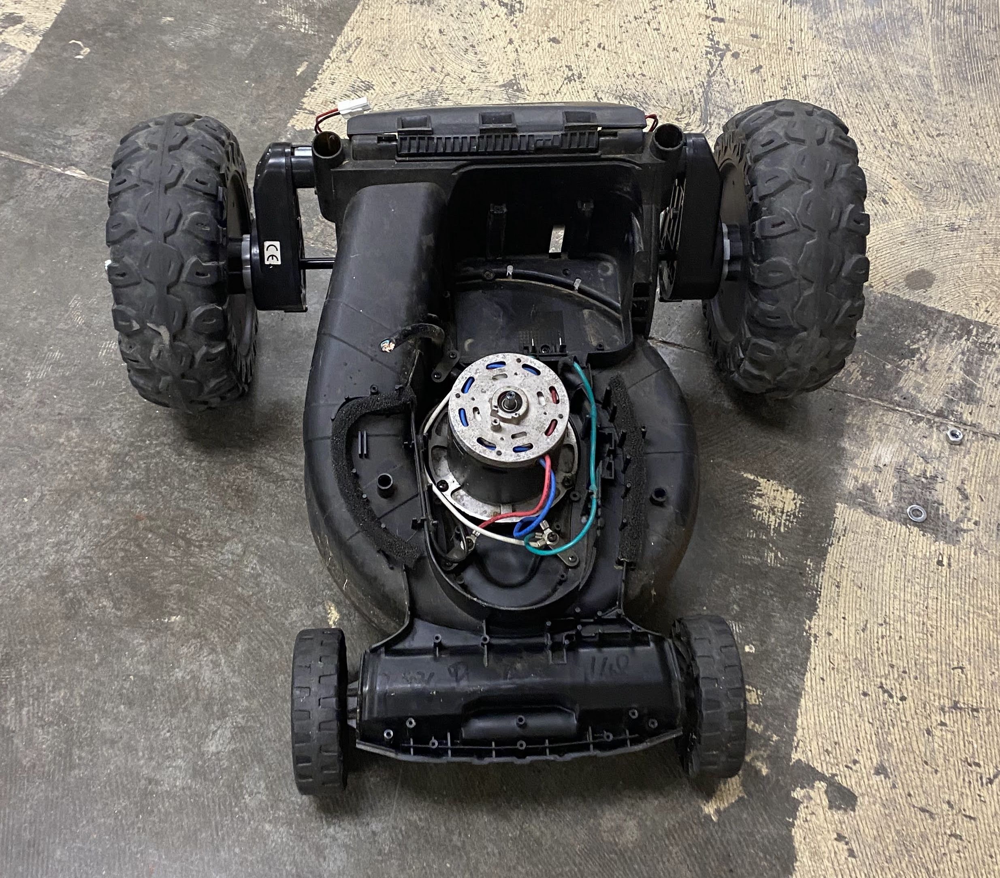
Build. The second prototype leaned on a production mower chassis and was assembled with JingXiang Mo in days. A compact sensor mount, low body, and four driven wheels created a more credible machine for a large-farm trial.
Challenge overcome. Moving from improvised mobility to a purpose-built mower frame improved ground clearance, durability, and the ability to demonstrate on uneven orchard terrain—without designing every mechanical subsystem from zero.
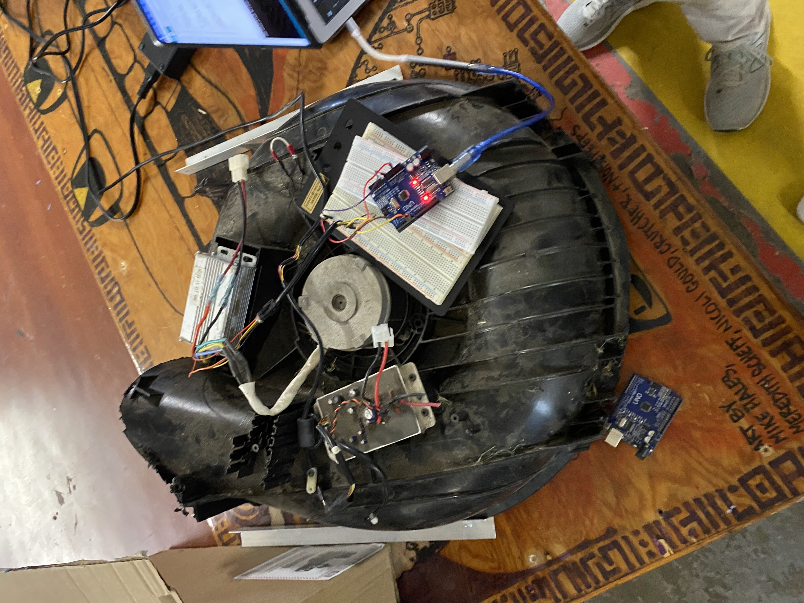
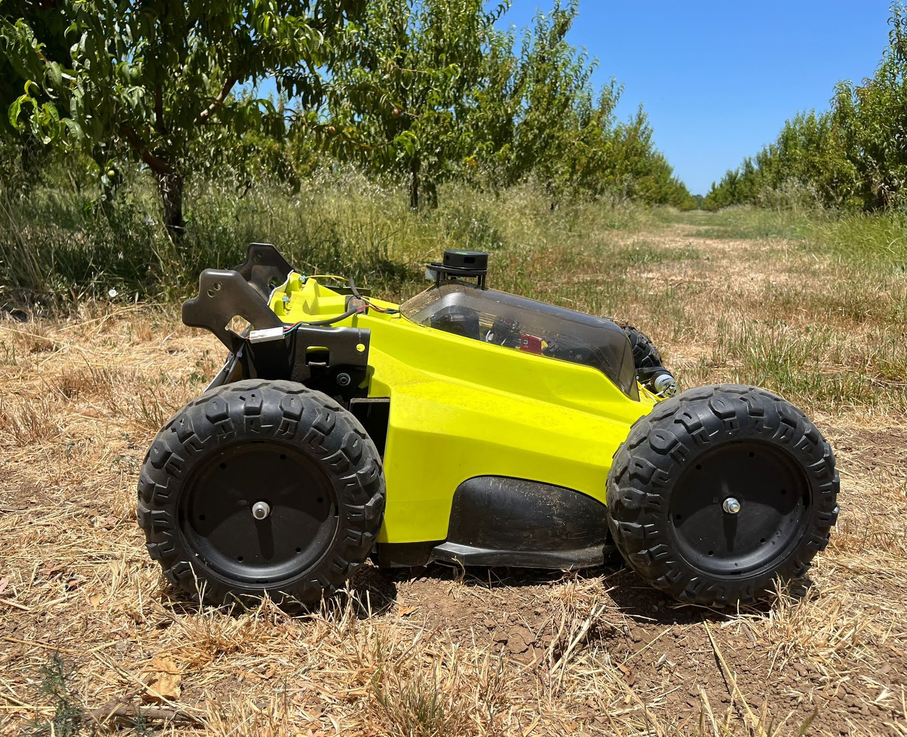
Build. ZAPTrack sourced a mowing base from a manufacturing partner, then focused its own work on making that platform autonomous. The vehicle interface could be driven by manipulating three signals, shrinking the integration surface.
Milestone. The team completed a $100 paid pilot on one acre, with broader testing across two acres of California almond and stone-fruit orchards, and reframed the company around software and integration that could be assembled onto incoming hardware in about one day.
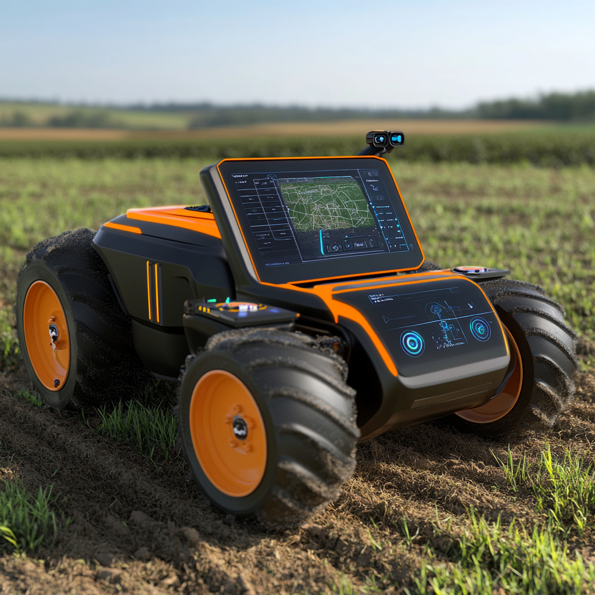
Each layer could evolve on its own: a commercially sourced base for dependable motion, a small electrical control interface, onboard perception, and task planning for orchard work.
Use a partner-built chassis to inherit traction, deck geometry, and serviceable hardware instead of re-solving the entire vehicle.
Minimize the autonomy-to-vehicle boundary so an incoming platform can be instrumented and tested quickly.
Run live orchard imagery through an onboard computer to identify trunks, rows, and other field objects near the machine.
Share one mobile platform across mowing, disease observation, harvest data, and precise weed-removal experiments.
Interviews spanned fertilizer optimization, aerial scouting, invasive-species detection, and weeding. The product narrowed toward weed removal only after growers exposed the severity and frequency of the task.
Use discarded and commodity systems as engineering modules. A mower, a ride-on toy drivetrain, simple wiring, and fast fabrication answered the mobility question for tens—not thousands—of dollars.
The first mower was visibly too tall. Instead of hiding the miss, the next iteration treated height, width, sensor placement, and under-canopy travel as primary architecture inputs.
The build moved quickly from a workshop assembly to orchard trials. Uneven ground, vegetation, dust, lighting, and transport exposed issues a benchtop test could not.
The manufacturing-partner platform shifted effort away from commodity mobility and toward the differentiated layer: control integration, perception, planning, and farm-specific workflows.
The technical demonstration earned demand, including a roughly $50K-per-month LOI. It also exposed a strategic mismatch: a premium product without an established premium segment or channel was difficult for an early-stage company to carry.
ZAPTrack reached the thing early hardware rarely reaches: a paying customer in the actual operating environment. The larger lesson was that technical feasibility, customer pain, and a scalable distribution path must mature together.
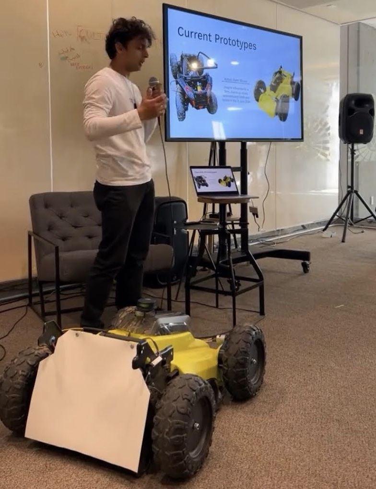
Start cheap. Learn in public. Make the next machine earn its complexity.
The premium-first approach created ambition, but not the channel required to support it. Reusing existing mower platforms pointed to the more durable idea: meet buyers through equipment they already know, then deliver value through autonomy.